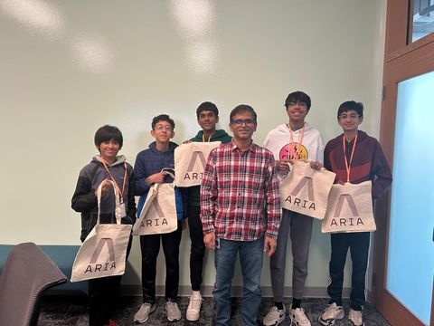

Computer vision
Meta Reality Labs
Vijay · Research Scientist
Vijay demonstrated how SLAM (Simultaneous Localization and Mapping) computer vision works in Meta's Project Aria AI glasses — how a device figures out where it is in a space it has never seen before.
What it changed on our robot
- Custom navigation paths instead of dead-reckoning alone.
- The idea of fusing two imperfect position sources, which became our Kalman filter over Pinpoint odometry and AprilTag poses.
- Machine learning as something we could actually reach for, not just read about.